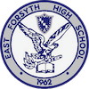
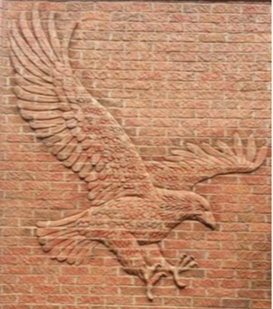

Ensembles
Explore our marching band, concert bands, percussion, color guard, jazz, and chamber ensembles, with information about each group's activities and expectations.
A polished home for the East Forsyth Band program — built for students, families, alumni, sponsors, and the Kernersville community.
Explore our marching band, concert bands, percussion, color guard, jazz, and chamber ensembles, with information about each group's activities and expectations.
Forms, handbook links, rehearsal expectations, fees, uniforms, and travel information.
Built for the Blue Regiment community. Whether you're a student, parent, alumni member, sponsor, or first-time visitor, you'll find everything you need to stay informed and connected with the East Forsyth Blue Regiment.
Placeholder: add official summer band camp dates, times, and location.
Placeholder: add football schedule and call times when available.
Placeholder: add event name, itinerary, and family volunteer needs.
Photos uploaded from the admin backend will appear here automatically.


Add booster meeting dates, volunteer signups, concessions, uniforms, meals, transportation, and fundraising needs.